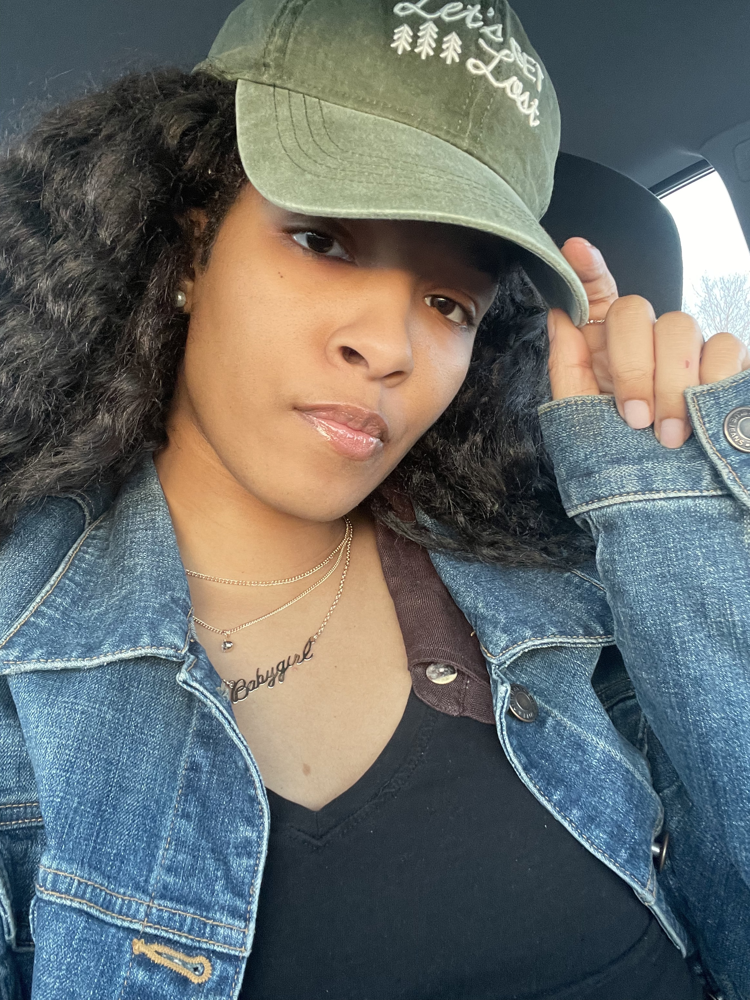
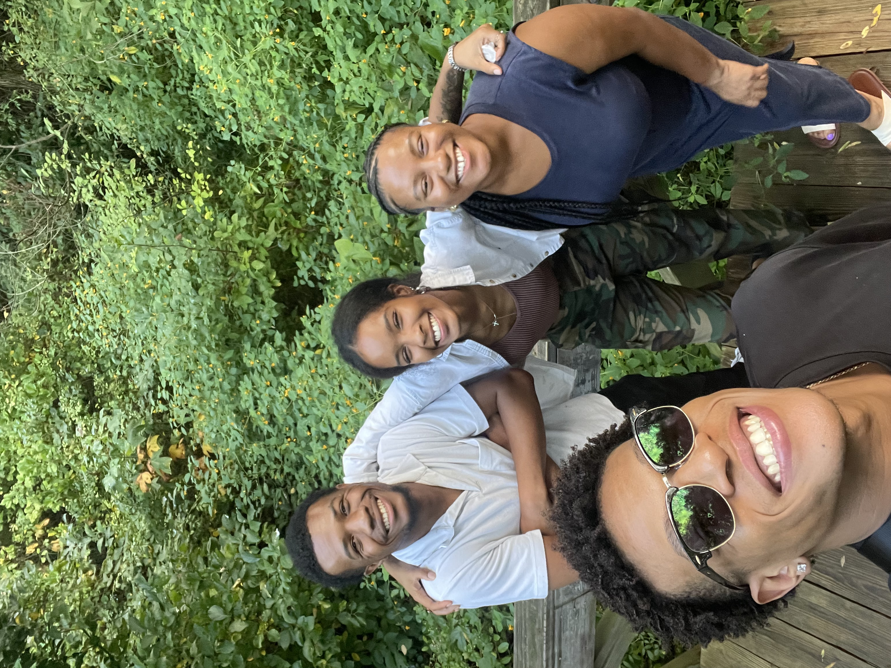
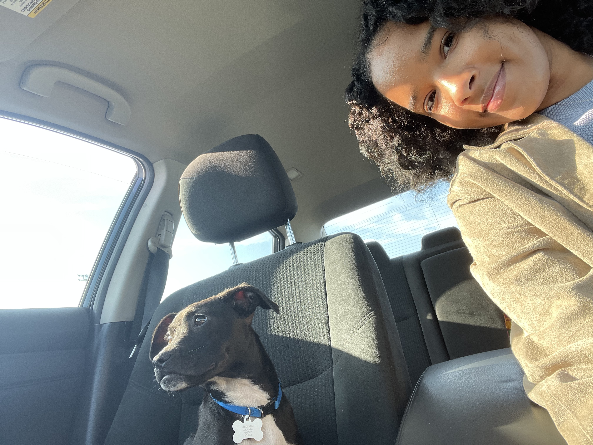
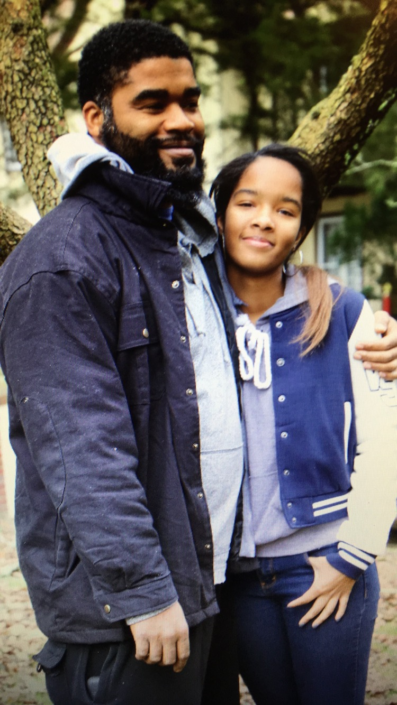
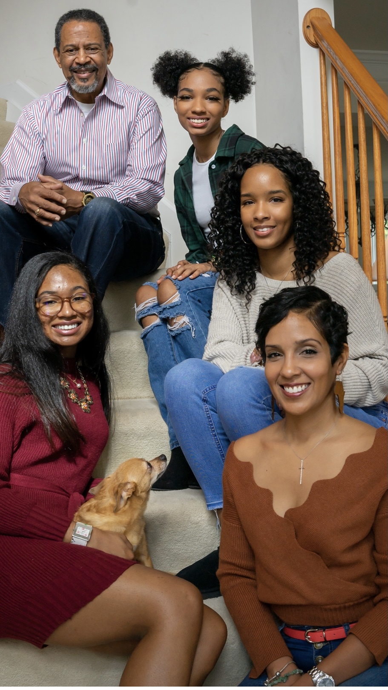

BIO
Born September 12, 1998 | Baltimore, MD

I was born and raised in Baltimore, Maryland. I attended high school at Western School of Environmental Science and Technology where I played varisty volleyball and soccer and continued to play recreationally well into college.
I studied Chemistry at Delaware State University. I graduated in 2019 - a year ahead of schedule — not because I was in a hurry, but because the untimely loss of my grandmother called me home. Family is very important to me.
My first professional role after undergrad came from W.L. Gore & Associates, where I spent nearly three years as a Quality Control Technician independently running their Permeation Lab. It was formative work — rigorous, detail-oriented, and grounding. When my grandfather received a diagnosis of dementia, I once again felt that pull toward family and made the decision to return home.
Finding roles in my field closer to home proved difficult, so I branched out. I explored photography and eventually moved into operations and management roles in events and hospitality. Those roles were challenging in ways I hadn't anticipated — and not always in ways that were visible from the outside. The experience pushed me to my limits, and the burnout that followed was hard to ignore.


Cleopatra Solange Lacy
That period of burnout led me to therapy and counseling — and ultimately to a deeper understanding of myself. I resonate with a late diagnosis of Autism Spectrum Disorder, and that insight didn't limit me; it clarified me. It helped me understand why I've always moved through the world the way I do, and it gave me language for things I had long felt but couldn't name. Going back to school wasn't just a career decision — it was the response to everything I had learned about myself.
I knew I wanted to pursue graduate education — something that honored the breadth of my experience rather than narrowing it. I returned to both lab and administrative work to finance that goal, holding the vision steady while I built the foundation.

Moving to Philadelphia changed everything. Through what I can only describe as divine intervention, I was able to reconnect with my father — a reunion I am deeply grateful for. Surrounded by loving family and friends, I am now a full-time graduate student at Drexel University, pursuing my Master of Library and Information Science, and I feel more aligned than I ever have.

Information Science, as it relates to human behavior, genuinely fascinates me. I am almost overwhelmed — in the best way — by how many disciplines it intersects with. My current interests are pulling me in two directions that feel equally right: community archives and the preservation of historically significant places, with a focus on making those spaces more inclusive; and science or reference librarianship, where I can bring my laboratory background into a research, academic, or institutional library setting.
I carry Maya Angelou's words with me always: take your people with you. That is not something I take lightly. The version of who I am today is because of eveyone who has supported and loved me along the way.